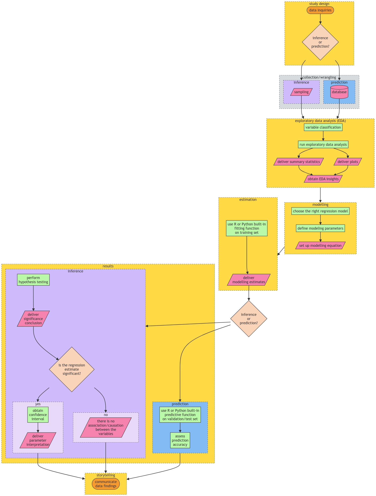
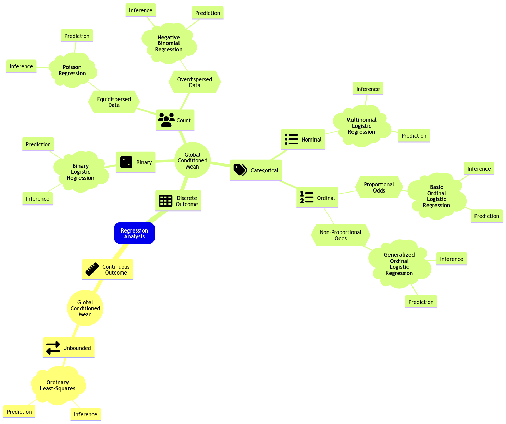
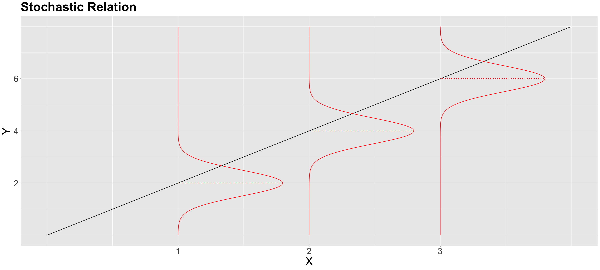
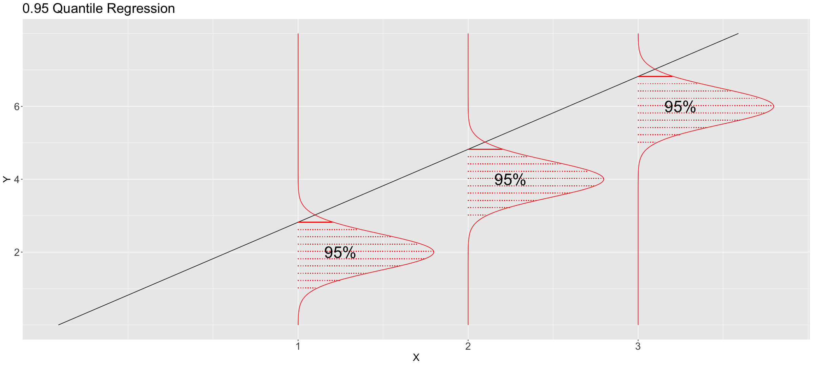

Regression II
Data Science Workflow
- General stages of the workflow:
- Study design
- Data collection and wrangling
- Exploratory data analysis (EDA)
- Data modeling
- Estimation
- Results
- Storytelling

From: https://pages.github.ubc.ca/MDS-2023-24/DSCI_562_regr-2_students/notes/lecture1-glm-link-functions-and-count-regression.html
- Choose a proper workflow according to either:
- Inferential
- Predictive
- Also choose correct regression model
Review of Regression I
Ordinary Least Squares (OLS) Regression
- Response of continuous nature (hence the “ordinary”)
- Response is subject to regressors (or explanatory variables/ features/ independent variables)
- More than 1 regressor => multiple linear regression
\[Response = Systematic + Random\]
\[Y_i = \beta_0 + \beta_1 g_1(x_{i1}) + \beta_2 g_2(x_{i2}) + \dots + \beta_p g_p(x_{ip}) + \epsilon_i\]
- random is the \(\epsilon_i\) term
Assumptions
- Linearity: the relationship between the response and functions of the regressors is linear
- Errors are independent of each other and are normally distributed with mean 0 and variance \(\sigma^2\)
Hence, each \(Y_i\) is assumed to be independent and normally distributed.
Estimation
To fit will need \(k+2\) parameters: \(\beta_0, \beta_1, \dots, \beta_k, \sigma^2\)
Minimize the sum of squared errors (SSE) OR maximize the likelihood of the observed data
Maximum Likelihood Estimation (MLE): find the parameters that maximize the likelihood of the observed data
- Likelihood: the probability of observing the data given the parameters
- Log-likelihood: the log of the likelihood
Inference
- Do a t-test on the parameters to see if they are statistically significant
Limitations of OLS
- OLS allows response to take any real number.
- Examples of non-suitable responses:
- Non-negative values
- Binary values (success/failure)
- Count data
Link Function
- Recall: OLS models a continuous response via its conditional mean
\[\mu_i = E(Y_i | X_i) = \beta_0 + \beta_1 g_1(x_{i1}) + \beta_2 g_2(x_{i2}) + \dots + \beta_p g_p(x_{ip}) \]
- BUT this is not suitable for non-continuous responses (e.g. binary, count, non-negative).
- Solution: use a link function \(h(\mu_i)\) to map the conditional mean to the real line
- Link function: relate the systematic component, \(\eta_i\), with the response’s mean
\[h(\mu_i) = \eta_i = \beta_0 + \beta_1 g_1(x_{i1}) + \beta_2 g_2(x_{i2}) + \dots + \beta_p g_p(x_{ip}) \]
- Monotonic: allows for a one-to-one mapping between the mean of the response variable and the linear predictor
\[\mu_i = h^{-1}(\eta_i)\]
- Differentiable: to allow for maximum likelihood estimation (MLE), used to obtain \(\hat{\beta}\) $$
Generalized Linear Models (GLM)
- Generalized Linear Models (GLM): a generalization of OLS regression that allows for non-continuous responses
GLM = link function + error distribution

Poisson Regression
Poisson regression: a GLM for count data (Equidispersed)
- Equidispersed: the variance of the response is equal to its mean (i.e. \(Var(Y_i) = E(Y_i) = \lambda_i\))
It assumes a random sample of \(n\) count observations \(Y_i\)s
- Independent
- Not Identically Distributed: Each \(Y_i\) has its own mean \(E(Y_i) = \lambda_i > 0\) and variance \(Var(Y_i) = \lambda_i > 0\)
\[Y_i \sim Poisson(\lambda_i)\]
- \(\lambda_i\) is the risk of event occurance in a given timeframe or area (definition of Poisson distribution)
Link Function for Poisson Regression
- Log link function: the log of the mean of the response variable is linearly related to the regressors
\[h(\mu_i) = log(\mu_i) = \eta_i = \beta_0 + \beta_1 X_{i1} + \beta_2 X_{i2} + \dots + \beta_p X_{ik} \]
Hence,
\[\lambda_i = e^{\eta_i} = e^{\beta_0 + \beta_1 X_{i1} + \beta_2 X_{i2} + \dots + \beta_p X_{ik}}\]
- This is good since \(\lambda_i\) (mean count) is always positive
Poisson Regression in R
glm(Y ~ X, family = poisson, data = dataset)
# view each regression coefficient
tidy(glm_model)
tidy(glm_model, conf.int = TRUE) # for 95% confidence interval
# view model summary
glance(glm_model)Interpretation of Coeffs of Poisson Regression
e.g. \(\beta_1 = 0.5\)
- \(\beta_1\) is the expected change in the log of the mean count for a one-unit increase in \(X_1\) holding all other variables constant
- a one-unit increase in \(X_1\) will increase the mean count by \(e^{0.5} = 1.65\) times.
Inference of Poisson Regression
- To determine the significance of the parameters \(\beta_1, \beta_2, \dots, \beta_p\), we can do a Wald statistic
\[z_j = \frac{\hat{\beta_j}}{SE(\hat{\beta_j})}\]
- To test the hypothesis:
- \(H_0: \beta_j = 0\)
- \(H_1: \beta_j \neq 0\)
Negative Binomial Regression
Negative Binomial Regression: a GLM for count data (Overdispersed)
- Overdispersed: the variance of the response is greater than its mean (i.e. \(Var(Y_i) > E(Y_i) = \lambda_i\))
Check for Overdispersion
dispersiontest(glm_model)- if p-value < 0.05, then there is overdispersion (reject null hypothesis)
If use Poisson regression on overdispersed data, then the standard errors will be underestimated => Type I error (false positive) increases
- Recall PMF of Negative Binomial Distribution:
\[P(Y_i | m,p_i) = (^{y_i + m - 1}_{y_i}) p_i^{y_i} (1 - p_i)^m\]
- \(y_i\) is the number of failures before experiencing \(m\) successes where probability of success is \(p_i\)
\[E(Y_i) = \frac{m(1-p_i)}{p_i}\]
\[Var(Y_i) = \frac{m(1-p_i)}{p_i^2}\]
- Rearranging the above equations, we get:
\[E(Y_i) = \lambda_i\]
\[Var(Y_i) = \lambda_i (1 + \frac{\lambda_i}{m})\]
- Interesting information:
\[X \sim Poisson(\lambda) = lim_{m \to \infty} Negative Binomial(m, p_i)\]
Negative Binomial Regression in R
glm.nb(Y ~ X, data = dataset)Since negative binomial has the same link function as Poisson, we can interpret the coefficients the same way.
Likelihood-based Model Selection
Deviance Test
- The deviance (\(D_k\)) is used to compare a given model with k regressors (\(l_k\)) with the baseline/ saturated model (\(l_0\)).
- The baseline model is the “perfect” fit to the data (overfitted), it has a distinct poisson mean (\(\lambda_i\)) for each \(i\)th observation.
\[D_k = 2 log \frac{\hat{l}_k}{\hat{l}_0}\]
Interpretation of \(D_k\)
- Large value of \(D_k\) => poor fit compared to baseline model
- Small value of \(D_k\) => good fit compared to baseline model
\(D_k\) in Poisson Regression
\[D_k = 2 \sum_{i=1}^n \left[ y_i log \left( \frac{y_i}{\hat{\lambda}_i} \right) - (y_i - \hat{\lambda}_i) \right]\]
*note: when \(y_i = 0\), log term is defined to be 0.
- Hypothesises are as follows (opposite of normal hypothesis):
- \(H_0\): Our model with k regressors fits the data better than the saturated model.
- \(H_A\): Otherwise
glance(model) # D_k is "deviance" col
# to get p-value
pchisq(summary_poisson_model_2$deviance,
df = summary_poisson_model_2$df.residual,
lower.tail = FALSE
)- Formally
devianceis residual deviance, this is a test statistic. - Asmptomatically, it has a null distribution of:
\[D_k \sim \chi^2_{n-k-1}\]
- dof: \(n-k-1\)
- \(n\) is the number of observations
- \(k\) is the number of regressors (including intercept)
Deviance for nested models
anova(model_1, model_2, test = "Chisq")
# deviance column is \delta D_k- model_1 is nested in model_2
- \(H_0\): model_1 fits the data better as model_2
- \(H_A\): model_2 fits the data better as model_1
\[\Delta D_k = D_{k_1} - D_{k_2} \sim \chi^2_{k_2 - k_1}\]
Akaike Information Criterion (AIC)
\[AIC_k = D_k + 2k\]
- AIC can be used to compare models that are not nested.
- Smaller AIC is better (means better fit)
- Can get from
glance()function
Bayesian Information Criterion (BIC)
\[BIC_k = D_k + k log(n)\]
- BIC tends to select models with fewer regressors than AIC.
- smaller BIC is better (means better fit)
- Can get from
glance()function
Multinomial Logistic Regression
- Is a MLE-based GLM for when the response is categorical and nominal.
- Nominal: unordered categories
- e.g. red, green, blue
- Ordinal: ordered categories
- e.g. low, medium, high
- Nominal: unordered categories
- Similar to binomial logistic regression, but with more than 2 categories.
- Link function is the logit function.
- need more than 1 logit function to model the probabilities of each category.
- One category is the baseline category, the other categories are compared to the baseline category.
\[\eta_i^{(model 2, model 1)} = \log\left[\frac{P(Y_i = \texttt{model 2} \mid X_{i, 1}, X_{i,2}, X_{i,3})}{P(Y_i = \texttt{model 1} \mid X_{i, 1}, X_{i,2}, X_{i,3})}\right]\]
\[= \beta_0^{(\texttt{model 2},\texttt{model 1})} + \beta_1^{(\texttt{model 2},\texttt{model 1})} X_{i, 1} + \beta_2^{(\texttt{model 2},\texttt{model 1})} X_{i, 2} + \beta_3^{(\texttt{model 2},\texttt{model 1})} X_{i, 3}\] \[\eta_i^{(model 3, model 1)} = \log\left[\frac{P(Y_i = \texttt{model 3} \mid X_{i, 1}, X_{i,2}, X_{i,3})}{P(Y_i = \texttt{model 1} \mid X_{i, 1}, X_{i,2}, X_{i,3})}\right]\]
\[=\beta_0^{(\texttt{model 3},\texttt{model 1})} + \beta_1^{(\texttt{model 3},\texttt{model 1})} X_{i, 1} + \beta_2^{(\texttt{model 3},\texttt{model 1})} X_{i, 2} + \beta_3^{(\texttt{model 3},\texttt{model 1})} X_{i, 3}\]
With some algebra, we can get the following (For m categories):
\[p_{i, \texttt{model 1}} = \frac{1}{1 + \sum_{j=2}^m e^{\eta_i^{(\texttt{model j}, \texttt{model 1})}}}\]
\[p_{i, \texttt{model 2}} = \frac{e^{\eta_i^{(\texttt{model 2}, \texttt{model 1})}}}{1 + \sum_{j=2}^m e^{\eta_i^{(\texttt{model j}, \texttt{model 1})}}}\]
- All probabilities sum to 1.
Nuances: Baseline Category
- The baseline level is the level that is not included in the model.
- can find using
levels()function, the first level is the baseline level.
- can find using
levels(data$response) # to check levels
# to change levels
data$response <- recode_factor(data$response,
"0" = "new_level_0",
"1" = "new_level_1",
)Estimation of MLR
model <- multinom(response ~ regressor_1 + regressor_2 + regressor_3,
data = data)
# to get test statistics
mlr_output <- tidy(model,
conf.int = TRUE, # to get confidence intervals (default is 95%)
exponentiate = TRUE) # to get odds ratios
# default result is log odds ratios
# can filter p-values
mlr_output |> filter(p.value < 0.05)
# predict
predict(model, newdata = data, type = "probs")
# sum of all probabilities is 1Inference of MLR
- Check if regressor is significant using Wald test.
\[z_j^{(u,v)} = \frac{\hat{\beta}_j^{(u,v)}}{SE(\hat{\beta}_j^{(u,v)})}\]
- For large sample sizes, \(z_j^{(u,v)} \sim N(0,1)\)
- To test the hypothesis:
- \(H_0\): \(\beta_j^{(u,v)} = 0\)
- \(H_A\): \(\beta_j^{(u,v)} \neq 0\)
Coefficient Interpretation for MLR
e.g. \(\beta_1^{(b,a)} = 0.5\)
- For a 1 unit increase in \(X_1\), the odds of being in category \(b\) is \(e^{0.5} = 1.65\) times the odds of being in category \(a\).
e.g. \(\beta_2^{(c,a)} = -0.5\)
- For a 1 unit increase in \(X_2\), the odds of being in category \(c\) decrease by \(39\%\) [$ 1 - (e^{-0.5}) = 1 - 0.61 = 0.39$] less than being in category \(a\).
Ordinal Logistic Regression
- Ordinal: has a natural ordering
- There might be loss of information when using MLR for ordinal data
- We are going to use the proportional odds model for ordinal data
- It is a cumulative logit model
Preprocessing for Ordinal Data
- Reorder the levels of the response variable
data$response <- as.ordered(data$response)
data$response <- fct_relevel(
data$response,
c("unlikely", "somewhat likely", "very likely")
)
levels(data$response)Data Model for OLR
For a response with \(m\) responses and \(k\) regressors, the model is:
We will have:
- \(m-1\) equations (link functions: logit)
- \(m-1\) intercepts
- \(k\) regression coefficients
Link Functions for m responses OLR
\[ \begin{gather*} \text{Level } m - 1 \text{ or any lesser degree versus level } m\\ \text{Level } m - 2 \text{ or any lesser degree versus level } m - 1 \text{ or any higher degree}\\ \vdots \\ \text{Level } 1 \text{ versus level } 2 \text{ or any higher degree}\\ \end{gather*} \]
\[ \begin{gather*} \eta_i^{(m - 1)} = \log\left[\frac{P(Y_i \leq m - 1 \mid X_{i,1}, \ldots, X_{i,k})}{P(Y_i = m \mid X_{i,1}, \ldots, X_{i,k})}\right] = \beta_0^{(m - 1)} - \beta_1 X_{i, 1} - \beta_2 X_{i, 2} - \ldots - \beta_k X_{i, k} \\ \eta_i^{(m - 2)} = \log\left[\frac{P(Y_i \leq m - 2 \mid X_{i,1}, \ldots, X_{i,k})}{P(Y_i > m - 2 \mid X_{i,1}, \ldots, X_{i,k})}\right] = \beta_0^{(m - 2)} - \beta_1 X_{i, 1} - \beta_2 X_{i, 2} - \ldots - \beta_k X_{i, k} \\ \vdots \\ \eta_i^{(1)} = \log\left[\frac{P(Y_i = 1 \mid X_{i,1}, \ldots, X_{i,k})}{P(Y_i > 1 \mid X_{i,1}, \ldots, X_{i,k})}\right] = \beta_0^{(1)} - \beta_1 X_{i, 1} - \beta_2 X_{i, 2} - \ldots - \beta_k X_{i, k}. \end{gather*} \]
Probability that \(Y_i\) is in level j
\[p_{i,j} = P(Y_i = j \mid X_{i,1}, \ldots, X_{i,k}) = P(Y_i \leq j \mid ...) - P(Y_i \leq j - 1 \mid ...)\]
- \(i\) is the index of the observation
- \(j\) is the level of the response variable
\[\sum_{j = 1}^{m} p_{i,j} = 1\]
Estimation of OLR
- use
MASS::polrfunction
ordinal_model <- polr(
formula = response ~ regressor_1 + regressor_2,
data = data,
Hess = TRUE # Hessian matrix of log-likelihood
)Inference of OLR
- Similar to MLR using Wald test
cbind(
tidy(ordinal_model),
p.value = pnorm(abs(tidy(ordinal_model)$statistic),
lower.tail = FALSE
) * 2
)
# confidence intervals
confint(ordinal_model) # default is 95%Coefficient Interpretation of OLR
- e.g. \(\beta_1 = 0.6\)
- For a one unit increase in \(X_1\), the odds of being in a higher category is \(e^{0.6} = 1.82\) times the odds of being in a lower category, holding all other variables constant.
Predictions
predict(ordinal_model, newdata = data, type = "probs")
# returns probabilities for each level- To get the corresponding predicted cumulative odds for a new observation, use
VGAM::vglmfunction
olr <- vglm(
response ~ regressor_1 + regressor_2,
propodds, # for proportional odds model
data,
)
# can also predict using this model, same as code block above
predict(olr, newdata = data, type = "response")
# get predicted cumulative odds
predict(olr, newdata = data, type = "link") |>
exp() # to get odds instead of log odds- Interpret the predicted cumulative odds as:
- e.g. \(logitlink(P[Y_i \geq j]) = 2.68\)
- A student with [data for \(X_i\)] is 2.68 times more likely to be in \(j\) or higher category than in category \(j - 1\) or lower, holding all other variables constant.
- e.g. \(logitlink(P[Y_i \geq 2]) = 0.33\)
- A student with [data for \(X_i\)] is 3.03 (1/0.33) times more likely to be in \(j\) category or lower than in category j or higher, holding all other variables constant.
- e.g. \(logitlink(P[Y_i \geq j]) = 2.68\)
Non-proportional Odds
- If the proportional odds assumption is not met, we can use the partial proportional odds model.
- Test for proportional odds assumption using the Brant-Wald test.
- \(H_0\): Our OLR model globally fulfills the proportional odds assumption.
- \(H_A\): Our OLR model does not globally fulfill the proportional odds assumption.
brant(ordinal_model)- If the proportional odds assumption is not met, we can use the generalized ordinal logistic regression model.
- Basically all \(\beta\)’s are allowed to vary across the different levels of the response variable.
Linear Fixed Effects Model
- Linear Fixed Effects Model (LFE) is a generalization of the linear regression model
- Fixed Effects: the parameters of the model
- constant for all observations
Limitations
- Data Hierarchy: the data is organized in a hierarchy
- Can be due to sampling levels
- e.g. investmests in different firms, students in different schools (sampling schemes may be different in different schools)
- Might have some correlation between datapoints in firms/ schools
- violates the independence assumption (i.i.d. observations)
Example: Investments in different firms
- Goal: assessing the association of gross investment with market_value and capital in the population of American firms.
- Data: 11 firms, 20 observations per firm
- 2 heirachical levels: firm and observation
- Trial 1: ignore firm
ordinary_model <- lm(
formula = investment ~ market_value + capital,
data = Grunfeld)- Trial 2: Different intercepts for different firms
model_varying_intercept <- lm(
# -1: so that baseline is not included as first intercept
formula = investment ~ market_value + capital + firm - 1,
data = Grunfeld)- Trial 3: OLS regeression for each firm
- This does NOT solve our goal.
- We want to find out among all firms, not one specific firm.
model_by_firm <- lm(
investment ~ market_value * firm + capital * firm,
data = Grunfeld)Linear Mixed Effects Model
- Fundamental idea:
- data subsets of elements share a correlation structure
- i.e. all n rows of training data are not independent
\[ \text{mixed effect} = \text{fixed effect} + \text{random effect} \]
\[\beta_{0j} = \beta_0 + b_{0j}\]
- \(\beta_{0j}\)/ mixed effect: the intercept for the \(j\)th school/ firm
- \(\beta_0\)/ fixed effect: the average intercept
- \(b_{0j}\)/ random effect: the deviation of the \(j\)th school/ firm from the average intercept
- \(b_{0j} \sim N(0, \sigma^2_{0})\)
- independent of the error term \(\epsilon\)
- Variance of the \(i\)th observation:
- \(\sigma^2_{0} + \sigma^2_{\epsilon}\)
Full Equation for LME
\[ y_{ij} = \beta_{0j} + \beta_{1j}x_{1ij} + \beta_{2j}x_{2ij} + \epsilon_{ij} \\ = (\beta_0 + b_{0j}) + (\beta_1 + b_{1j})x_{1ij} + (\beta_2 + b_{2j})x_{2ij} + \epsilon_{ij} \]
For \(i\) in \(1, 2, \ldots, n_j\) and \(j\) in \(1, 2, \ldots, J\)
Note: \((b_{0j}, b_{1j}, b_{2j}) \sim N(\textbf{0}, \textbf{D})\)
- \(\textbf{0}\): vector of zero, e.g. \((0, 0, 0)^T\)
- \(\textbf{D}\): generic covariance matrix
\[\textbf{D} = \begin{bmatrix} \sigma^2_{0} & \sigma_{01} & \sigma_{02} \\ \sigma_{10} & \sigma^2_{1} & \sigma_{12} \\ \sigma_{20} & \sigma_{21} & \sigma^2_{2} \end{bmatrix} = \begin{bmatrix} \sigma^2_{0} & \rho_{01}\sigma_{0}\sigma_{1} & \rho_{02}\sigma_{0}\sigma_{2} \\ \rho_{10}\sigma_{0}\sigma_{1} & \sigma^2_{1} & \rho_{12}\sigma_{1}\sigma_{2} \\ \rho_{20}\sigma_{0}\sigma_{2} & \rho_{21}\sigma_{1}\sigma_{2} & \sigma^2_{2} \end{bmatrix}\]
- \(\rho_{uv}\): pearson correlation between uth and vth random effects
Model Fitting of LME
- use the
lmerfunction from thelme4package
mixed_intercept_model <- lmer(
response ~ regressor_1 + regressor_2 +
(1 | school), # random intercept by firm
data
)
full_model <- lmer(
response ~ regressor_1 + regressor_2 +
(regressor_1 + regressor_2| school),
# random intercept and slope by firm
data
)- Equation for mixed intercept model:
\[y_{ij} = (\beta_0 + b_{0j}) + \beta_1x_{1ij} + \beta_2x_{2ij} + \epsilon_{ij}\]
- Equation for full model:
\[y_{ij} = (\beta_0 + b_{0j}) + (\beta_1 + b_{1j})x_{1ij} + (\beta_2 + b_{2j})x_{2ij} + \epsilon_{ij}\]
Inference of LME
- Cannot do inference using normal t-test
summary(mixed_intercept_model)
summary(full_model)
# obtain coefficients
coef(mixed_intercept_model)$firm
coef(full_mixed_model)$firmPrediction with LME
Predict on existing group
Predict on new group
predict(full_model,
newdata = tibble(school = "new_school", regressor_1 = 1, regressor_2 = 2))Piecewise Local Regression
- Recall that classical linear regression (parametric) favours interpreatbility when aiming to make inference
- If goal is accurate prediction, then we can use local regression (non-linear)
Piecewise Constant Regression
- Use step function to fit a piecewise constant function
\[ C_0(X_i) = I(X_i < c_1) = \begin{cases} 1 & \text{if } X_i < c_1 \\ 0 & \text{otherwise} \end{cases} \]
\[ C_1(X_i) = I(c_1 \leq X_i < c_2) = \begin{cases} 1 & \text{if } c_1 \leq X_i < c_2 \\ 0 & \text{otherwise} \end{cases} \]
\[ \vdots \]
\[ C_{k-1}(X_i) = I(c_{k-1} \leq X_i < c_k) = \begin{cases} 1 & \text{if } c_{k-1} \leq X_i < c_k \\ 0 & \text{otherwise} \end{cases} \]
\[ C_k(X_i) = I(X_i \leq c_k) = \begin{cases} 1 & \text{if } X_i \leq c_k \\ 0 & \text{otherwise} \end{cases} \]
\[Y_i = \beta_0 + \beta_1 C_1(X_i) + \beta_2 C_2(X_i) + \cdots + \beta_k C_k(X_i) + \epsilon_i\]
- No need \(C_0\) just by definition of \(C_0\)
breakpoints <- c(10, 20, 30, 40, 50) # or 5 (number of breakpoints)
# create steps
data <- data |> mutate(
steps = cut(data$var_to_split,
breaks = breakpoints,
right = FALSE))
levels(data$steps) # check levels
model <- lm(Y ~ steps, data = data)Non-Continous Piecewise Linear Regression
- Add interaction terms to the model
\[Y_i = \beta_0 + \beta_1C_1(X_i) + \cdots + \beta_kC_k(X_i) \\ + \beta_{k+1}X_i + \beta_{k+2}X_iC_1(X_i) + \cdots + \beta_{2k}X_iC_k(X_i) + \epsilon_i\]
model_piecewise_linear <- lm(Y ~ steps * var_to_split, data = data)Continous Piecewise Linear Regression
\[Y_i = \beta_0 + \beta_1X_i + \beta_2(X_i - c_1)_+ + \cdots + \beta_k(X_i - c_{k-1})_+ + \epsilon_i\]
Where:
\[(X_i - c_j)_+ = \begin{cases} X_i - c_j & \text{if } X_i > c_j \\ 0 & \text{otherwise} \end{cases}\]
model_piecewise_cont_linear <- lm(Y ~ var_to_split +
I(var_to_split - breakpoint[2]) * I(var_to_split >= breakpoint[2]) +
I(var_to_split - breakpoint[3]) * I(var_to_split >= breakpoint[3]) +
I(var_to_split - breakpoint[4]) * I(var_to_split >= breakpoint[4]) +
I(var_to_split - breakpoint[5]) * I(var_to_split >= breakpoint[5]),
data = data)kNN Regression
- In this section:
- \(k\): number of neighbours
- \(p\): number of regressors
- kNN is a non-parametric method
- no training phase (lazy learner)
- finds \(k\) closest neighbours to the query point \(x_0\) and predicts the average of the neighbours’ responses
- \(k=1\) means no training error but overfitting
model_knn <- knnreg(Y ~ X, data = data, k = 5)Locally Weighted Scatterplot Smoothing (LOWESS)
Idea:
- Find closest points to \(x_i\) (query point)
- assign weights based on distance
- closer -> more weight
- use weighted least squares for second degree polynomial fit
Minimize sum of squares of weighted residuals
\[\sum_{i=1}^n w_i(y_i - \beta_0 - \beta_1x_i - \beta_2x_i^2)^2\]
- This model can deal with heteroscedasticity (non-constant variance)
- Weighted least squares allows different variance for each observation
- Things to consider:
span: between 0 and 1, specifies the proportion of points considered as neighbours (more neighbours -> smoother fit)degree: degree of polynomial to fit
model_lowess <- lowess(Y ~ X, data = data, span = 0.5, degree = 2)Quantile Regression
Quantile: Recap
- The quantile \(Q(\tau)\) is the observed value of \(X\) such that \(\tau * 100\%\) of the data is less than or equal to \(X\).
- i.e. on the left side of the distribution
 
Applications of Quantile Regression
Quantile regression is a form of regression analysis used to estimate the conditional median or other quantiles of a response variable.
Types of questions that can be answered with quantile regression:
- For baseball teams in the upper 75% threshold in runs, are these runs largely associated with a large number of hits?
- For any given team that scores 1000 hits in future tournaments, how many runs can this team score with 50% chance?
Parametric Quantile Regression
- Recall OLS: \[ \mathbb{E}(Y_i \mid X_{i,j} = x_{i,j}) = \beta_0 + \beta_1 x_{i,1} + \ldots + \beta_k x_{i,k}; \]
\[ \text{loss} = \sum_{i = 1}^n (y_i - \beta_0 - \beta_1 x_{i,1} - \ldots - \beta_k x_{i,k})^2. \]
- Parametric Quantile Regression:
\[ Q_i( \tau \mid X_{i,j} = x_{i,j}) = \beta_0(\tau) + \beta_1(\tau) x_{i,1} + \ldots + \beta_k(\tau) x_{i,k} \]
(notice the \(\beta\)s are now functions of \(\tau\))
- Error term: Fidelity
\[ \text{loss} = \sum_{i} e_i[\tau - I(e_i < 0)] = \sum_{i: e_i \geq 0} \tau|e_i|+\sum_{i: e_i < 0}(1-\tau)|e_i| \]
Where
\[I(e_i < 0) = \begin{cases} 1 & \text{if } e_i < 0 \\ 0 & \text{otherwise} \end{cases}\]
Estimation of Parametric Quantile Regression
# Plotting the quantiles
ggplot(data, aes(x, y)) +
geom_point() +
geom_quantile(quantiles = c(0.25, 0.5, 0.75),
formula = y ~ x)
# fit the model
pqr_model <- rq(y ~ x,
tau = c(0.25, 0.5, 0.75),
data = data)Inference of Parametric Quantile Regression
To justify the relationship b/w the \(\tau\)th quantile in response and regressors.
Use test statistics to test the null hypothesis that the \(\tau\)th quantile is not related to the regressors.
- \(t\)-value with \(n - k - 1\) degrees of freedom:
\[t_j = \frac{\hat{\beta}_j(\tau)}{\text{SE}(\hat{\beta}_j(\tau))}\]
Null hypothesis: \(H_0 : \beta_j(\tau) = 0\).
Check p-value:
summary(pqr_model)[1]for \(\tau = 0.25\),summary(pqr_model)[2]for \(\tau = 0.5\),summary(pqr_model)[3]for \(\tau = 0.75\).
Coefficient Interpretation
- Similar to OLS
- \(\beta_1(\tau)\) is the change in the \(\tau\)th quantile of \(Y\) for a unit increase in \(X_1\).
- e.g. \(\beta_1(0.75) = 0.5\) means that for a unit increase in \(X_1\), the 75th quantile of \(Y\) increases by 0.5.
Prediction
predict(pqr_model, newdata = data.frame(...))Nonparametric Quantile Regression
- Implicates no distributional assumptions and no model function specification.
- \(\lambda\) is the penalty parameter.
- Choosing how local the estimation is.
- small \(\lambda\): better approx, but more variance (model not smooth)
- large \(\lambda\): lose local info, favouring smoothness (global info)
median_rqss <- rqss(y ~ qss(x, lambda = 0.5),
tau = 0.5, # cannot do multiple quantiles
data = data)
summary(median_rqss)
predict(median_rqss, newdata = data.frame(...))Missing Data
Types of Missing Data
Missing Completely at Random (MCAR)
- The probability of missing data is the same for all observations
- Missingness is independent of data (Ideal case because there is no pattern)
- No systematic differences between missing and non-missing data
Missing at Random (MAR)
- The probability of missing data depends on observed data
- Can use imputation to fill in missing data:
- Hot deck: Replace missing value with a value from the same dataset
- Cold deck: Replace missing value with a value from a different dataset
Missing Not at Random (MNAR)
- The probability of missing data depends on unobservable quantities
- E.g. missing data on income for people who are unemployed
Handling Missing Data
Listwise Deletion
- Remove all observations with missing data
- If data is MCAR, this is unbiased
- Also increases standard errors since we’re using less data
- If data is MAR or MNAR, this is biased (CAREFUL)
- e.g. if missing data is related to income, lower income will omit telling us their income, so removing them will bias our data to higher income.
Mean Imputation
- Replace missing data with the mean of the observed data
- Can only be used on continuous/ count data
- Artificially reduces standard errors (drawback)
- Also reduces variance, which is not good
library(mice)
data <- mice(data, seed = 1, method = "mean")
complete(data)Regression Imputation
- Use a regression model to predict missing data
- Use the predicted value as the imputed value
- We will reinforce the relationship between the predictor and the variable with missing data
- This is not good if the relationship is not strong
- Will change inference results
data <- mice(data, seed = 1, method = "norm.predict")
complete(data)Multiple Imputation
Idea: Impute missing data multiple times to account for uncertainty
Use
micepackage in R. Stands for Multivariate Imputation by Chained EquationsSteps:
- Create
mcopies of the dataset - In each copy, impute missing data (different values)
- Carry out analysis on each dataset
- Combine models to one pooled model
- Create
imp_data <- mice(data, seed = 1, m = 15, printFlag = FALSE)
complete(data, 3) # Get the third imputed dataset
# estimate OLS regression on each dataset
models <- with(imp_data, lm(y ~ x1 + x2))
# get third model
models$analyses[[3]]
# combine models
pooled_model <- pool(models)
summary(pooled_model) # remember to exp if using log model